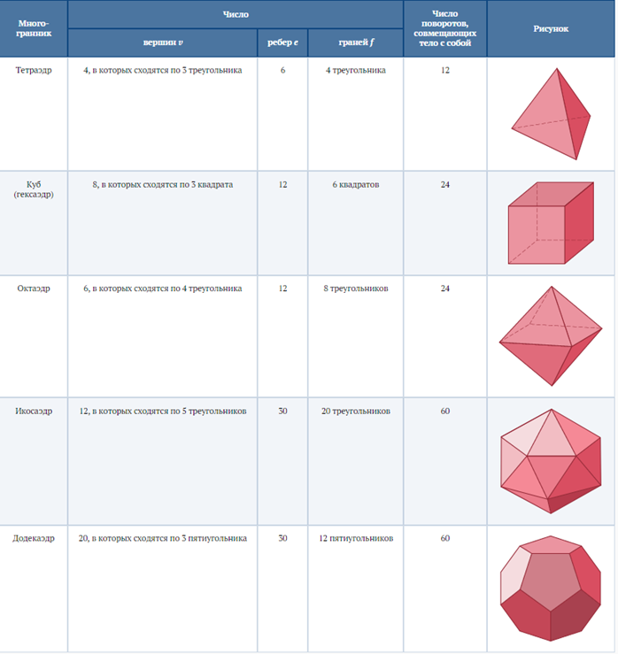
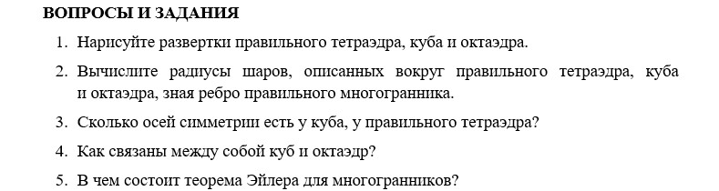

Какие многогранники стали символом красоты и совершенства?
Древнегреческим философом Платоном так описаны правильные многогранники: «Земле мы, конечно, припишем вид куба: ведь из всех четырех сущностей наиболее неподвижна и пригодна к образованию тел именно Земля, а потому ей необходимо иметь самые устойчивые основания… Из всех тел наиболее подвижно по природе своей то, у которого наименьшее число оснований, ибо оно со всех сторон имеет режущие грани и колющие углы… Пусть же образ пирамиды, рожденный объемным, и будет первоначалом и семенем огня…».
Правильный многогранник — это выпуклый многогранник, у которого все грани — одинаковые правильные многоугольники и в каждой вершине сходится одно и то же число ребер.
Приведем таблицу, описывающую количественные характеристики правильных многогранников.
Таблица
В таблице:
v — число вершин многогранника; e — число ребер; f — число граней. Легко заметить, что во всех случаях выполняется соотношение: v + f = e + 2, т. е. что сумма числа вершин и числа граней на 2 больше числа ребер.
Это наблюдение верно для любого выпуклого многогранника и составляет содержание знаменитой теоремы, доказанной впервые Леонардом Эйлером.
Теорема Эйлера. Пусть f обозначает число граней, e — число ребер, v — число вершин выпуклого многогранника. Тогда f + v = e + 2.
